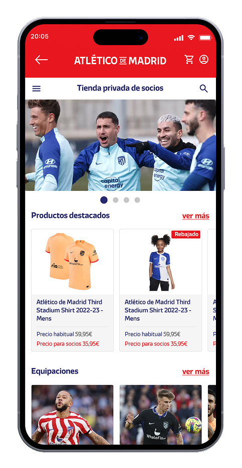
Selected · used in work cards and case page
Member shop and fan services
Uses the established shell and gives the home cover a clean edge.
I sorted the desktop exports by case, chose the assets that add real visual evidence, and replaced the soft phone artwork where a cleaner source was available. Open a case to see the selected images in their page context.
No new Atlético export was among this desktop batch. I switched the cover to the clean phone-shell asset already prepared for the case, removing the rough cropped shadow.

Uses the established shell and gives the home cover a clean edge.
The low-resolution watch image is replaced by the Figma watch export. The four storyboard stages are separated into illustrations and readable page copy; the survey and voice display add context.
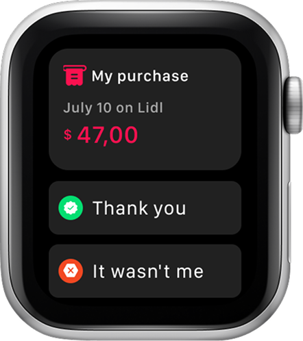
Higher-resolution receipt with the dispute action clear.
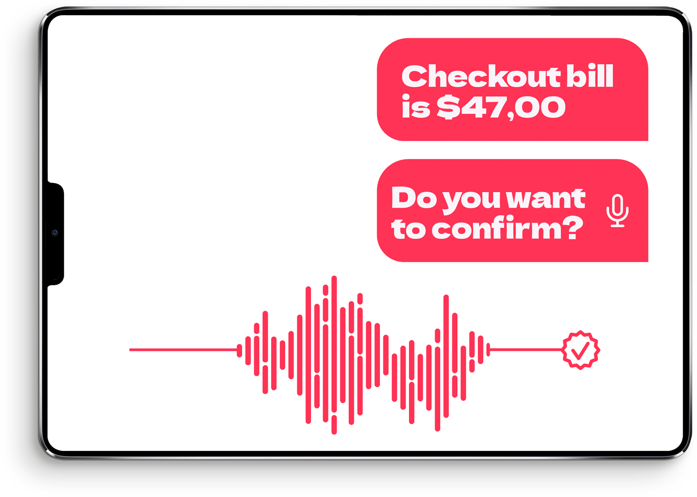
Wide display makes the amount, spoken prompt and response state visible.
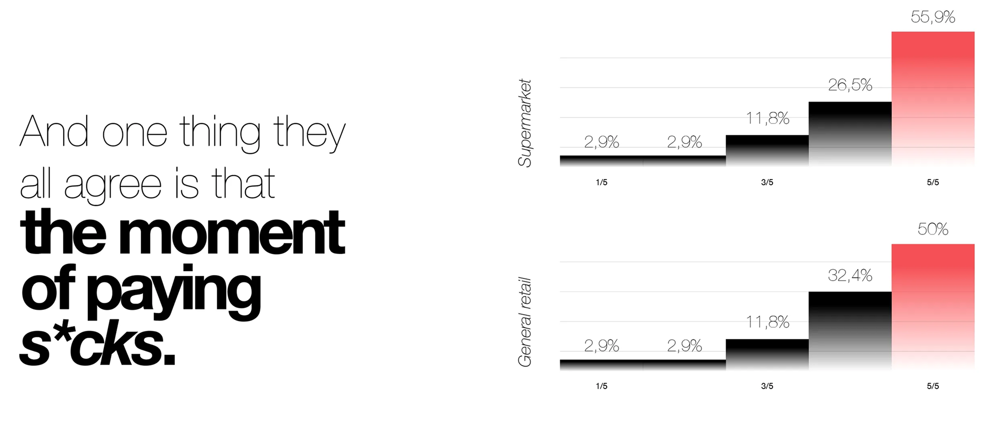
The original graphic is preserved, with enlarged chart crops for mobile.
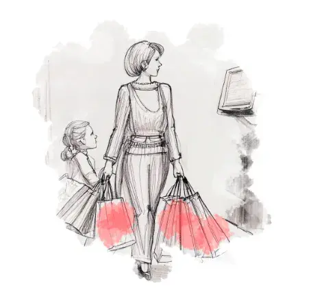
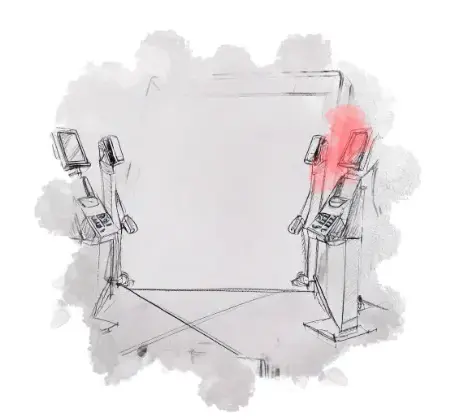
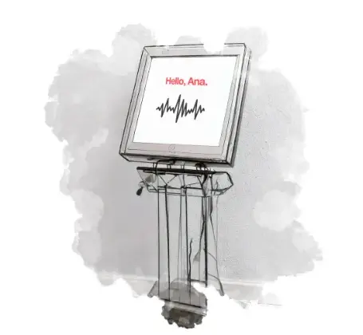
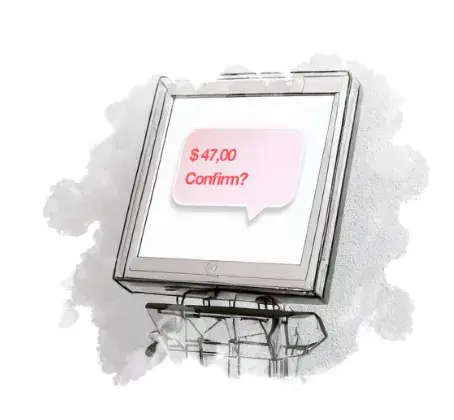
The original phone screens are already sharper than the new duplicate export. I kept them and added the distinct, high-resolution bank-provider picker as a wide case feature.
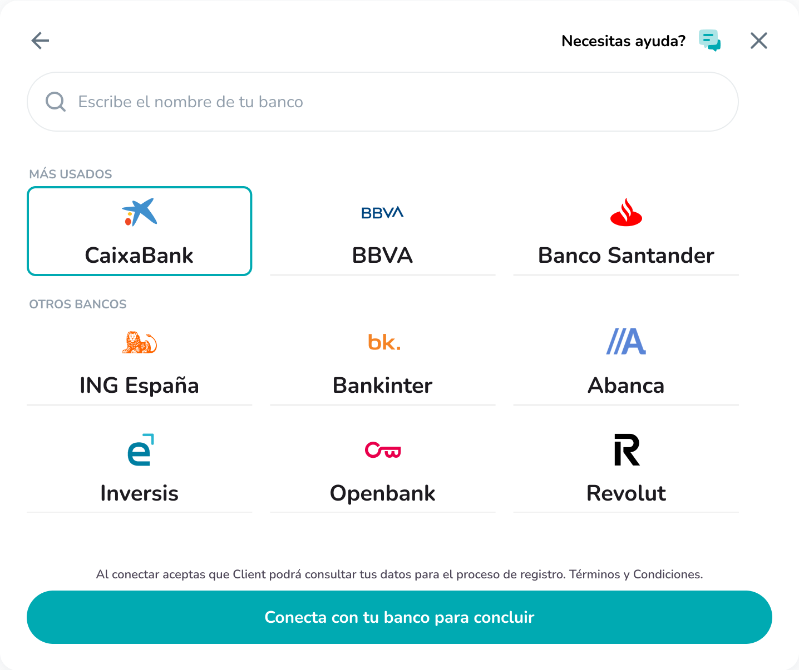
Full-size crop removes the gritty shadow around the source export.

Existing 1,109 px source retained.
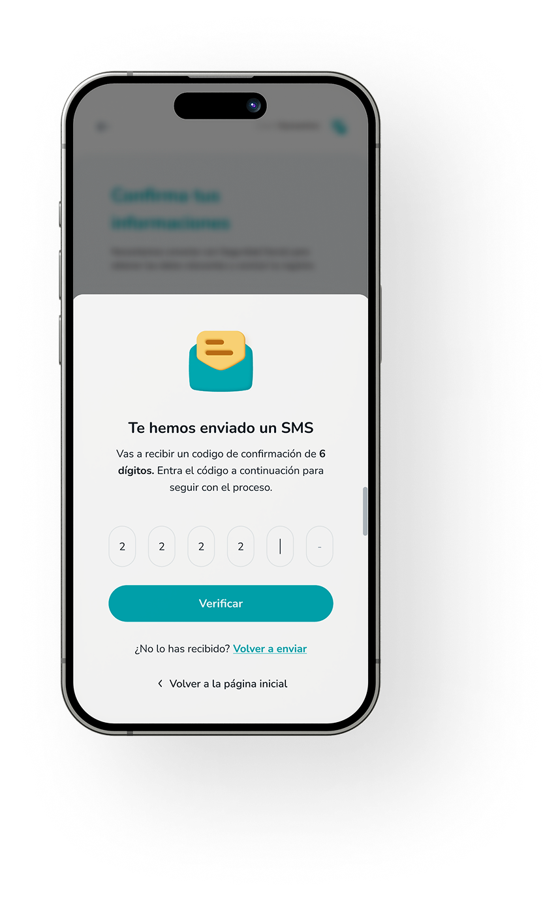
Good modal focus, but the surrounding screen is deliberately blurred.
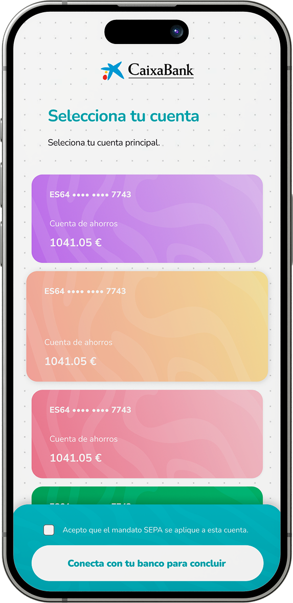
The site keeps its existing, larger source of the same screen.
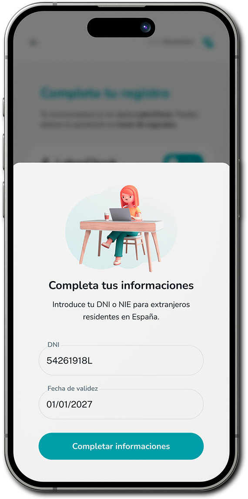
The focused form is clear, while the underlying interface is blurred.
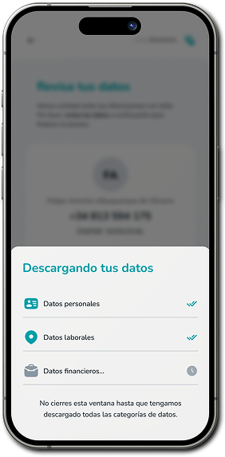
The 282 px export would soften on the case page, and its backdrop is blurred.
These do not belong in the three cases above, so they are stored under their matching case folders.
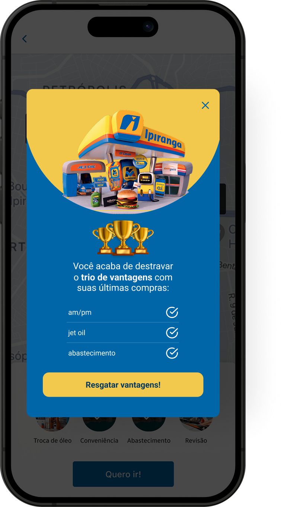
Shows the trio de vantagens after the customer’s recent purchases.
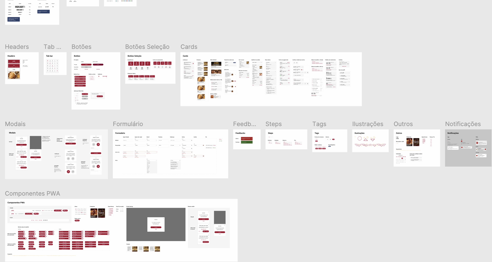
Kept as reference; its dense full-board view needs a separate presentation to read well.